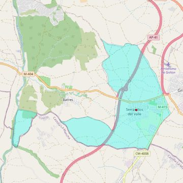

San Nicolás de Bari
- Arciprestazgo
- Griñón
- Población
- Serranillos del Valle
- Dirección postal
- c/ Iglesia, 1
- Código postal
- 28979
- Extensión
- 13,28 km² (1.328 ha)
- Teléfono
- 918 138 124
- Correo electrónico
- sannicolasdebari-serranillos@diocesisgetafe.es
- Información demográfica
- De la parroquia · De la población (Serranillos del Valle) · Del arciprestazgo (Griñón)
- Resumen para imprimir
- La parroquia en una hoja (A4)


Descargar mapaLímites según decreto
Los del término municipal
¿Algún dato de esta parroquia es incorrecto o ha cambiado? Comuníquenoslo.